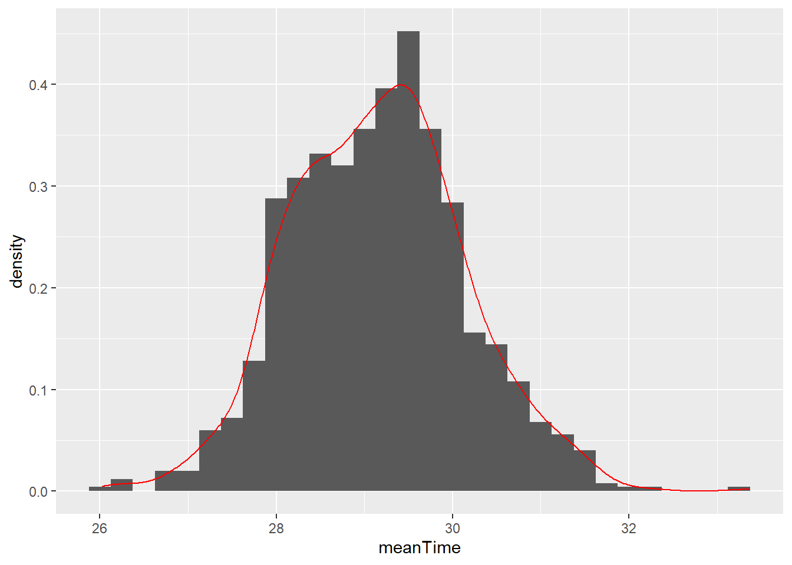
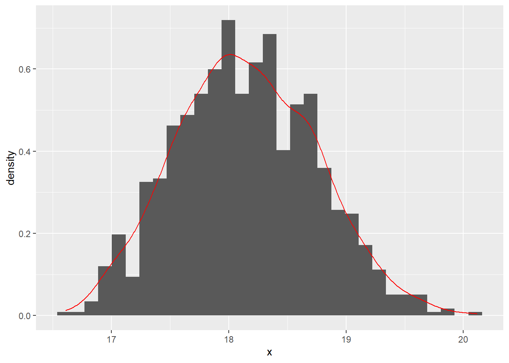

Chapter 5 Bootstrapping
The following note is made when I was studying Bret Larget’s note posted online. http://pages.stat.wisc.edu/~larget/stat302/chap3.pdf
He used the data from LOck5data as an example.
## 'data.frame': 500 obs. of 5 variables:
## $ City : Factor w/ 1 level "Atlanta": 1 1 1 1 1 1 1 1 1 1 ...
## $ Age : int 19 55 48 45 48 43 48 41 47 39 ...
## $ Distance: int 10 45 12 4 15 33 15 4 25 1 ...
## $ Time : int 15 60 45 10 30 60 45 10 25 15 ...
## $ Sex : Factor w/ 2 levels "F","M": 2 2 2 1 1 2 2 1 2 1 ...## [1] 29.11Now, he sampled a (b times n) table. Note that, the Atlanta data has 500 row, as it has 500 observations (or, people). But, in the following new matrix, it is a (1000 times 500) table. Also, it should be noted that the logic of sample function in R. This webpage provides some insight into this function. Basically, the following R code randomly sample a bigger sample of (1000 times 500) from those 500 data points. After that, the matrix function put such (1000 times 500) data points into a matrix of (1000 times 500).
B = 1000
n = nrow(CommuteAtlanta)
boot.samples = matrix(sample(CommuteAtlanta$Time, size = B * n, replace = TRUE),
B, n)Next, we need to calculate the mean for each row. Remember, we have 1000 rows. Note that, 1 in the apply function indicates that we calculate means on each row, whereas 2 indicates to each column.
We can then plot all the means.
## Loading required package: ggplot2## Warning: package 'ggplot2' was built under R version 3.6.3ggplot(data.frame(meanTime = boot.statistics),aes(x=meanTime)) +
geom_histogram(binwidth=0.25,aes(y=..density..)) +
geom_density(color="red")
## [1] 0.9215912## [1] 1.9## [1] 27.2 31.0Note, if we do not use bootstraping, we can use the standard CI formula (https://www.mathsisfun.com/data/confidence-interval.html). This formula assumes normal distribution. As we can see, this is close to the result based on the bootstrapping method.
\[\overline{X} \pm Z \frac{S}{\sqrt{n}}=29.11 \pm 1.96 \frac{20.72}{\sqrt{500}}=27.29, 30.93\]
Note that, in the following, the author used 2 times SE to calculate the CI. The relationship between SD and SE:
“Now the sample mean will vary from sample to sample; the way this variation occurs is described by the “sampling distribution” of the mean. We can estimate how much sample means will vary from the standard deviation of this sampling distribution, which we call the standard error (SE) of the estimate of the mean. As the standard error is a type of standard deviation, confusion is understandable. Another way of considering the standard error is as a measure of the precision of the sample mean." (https://www.ncbi.nlm.nih.gov/pmc/articles/PMC1255808/)
boot.mean = function(x,B,binwidth=NULL)
{
n = length(x)
boot.samples = matrix( sample(x,size=n*B,replace=TRUE), B, n)
boot.statistics = apply(boot.samples,1,mean)
se = sd(boot.statistics)
require(ggplot2)
if ( is.null(binwidth) )
binwidth = diff(range(boot.statistics))/30
p = ggplot(data.frame(x=boot.statistics),aes(x=x)) +
geom_histogram(aes(y=..density..),binwidth=binwidth) + geom_density(color="red")
plot(p)
interval = mean(x) + c(-1,1)*2*se
print( interval )
return( list(boot.statistics = boot.statistics, interval=interval, se=se, plot=p) )
}
## [1] 16.9641 19.3479To understand the function of sample in R.
## [1] 17 9 14 12 13 1 15 13 2 10 19 4 20 13 18 8 1 14 6 5The following uses loop to do the resampling. It uses sample function to index the numbers that they want to sample from the original sample. That is, [] suggests the indexing.
n = length(CommuteAtlanta$Distance)
B = 1000
result = rep(NA, B)
for (i in 1:B)
{
boot.sample = sample(n, replace = TRUE)
result[i] = mean(CommuteAtlanta$Distance[boot.sample])
}
with(CommuteAtlanta, mean(Distance) + c(-1, 1) * 2 * sd(result))## [1] 16.91513 19.39687